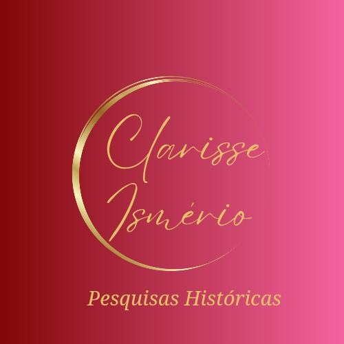

Clarisse, preparei três caminhos visuais para o seu site — todos usando as cores da sua marca (vermelho, rosa e dourado). A estrutura segue a mesma referência combinada, com Sobre, Livros, Sarau Noturno, Palestras e Blog. Abra cada um e me diga qual te conquistou. ✨
Clique para abrir cada opção em tela cheia →
Fundo marfim, vinho profundo e dourado discreto. Tipografia serifada refinada. Transmite tradição, autoridade acadêmica e sofisticação atemporal — bem na linha do site de referência.
Ver Opção 1O gradiente vermelho→rosa da sua logo como protagonista, com dourado e formas arredondadas. Energética, atual e calorosa — combina com o lado cultural e o Sarau Noturno.
Ver Opção 2Fundo bordô escuro, dourado brilhante e a lua do Sarau Noturno. Dramática, premium e poética — evoca a noite, a memória e a sensibilidade que marcam o seu trabalho.
Ver Opção 3